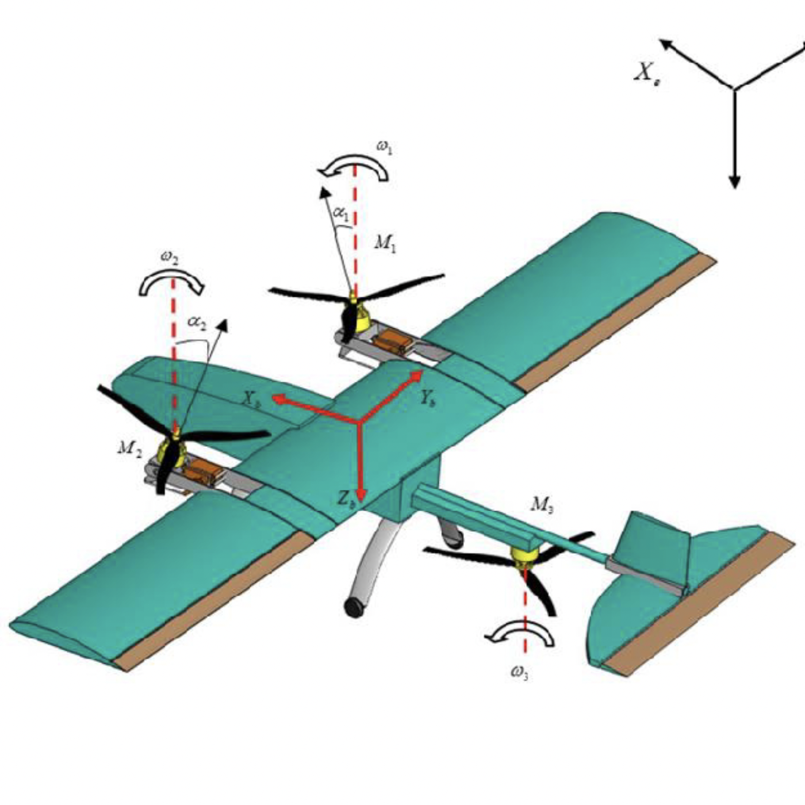

Magpie
 As Avionics Lead on Rice Flight, I am responsible for the avionics design of Magpie, our aircraft for 2025 SAE Aero Advanced Competition. For the 2025 competition season, there is a significant focus on the entire mission being fully autonomous, which adds additional complexity to the design.
The competition is in May 2025, so we have not completed any testing or physical construction yet, but I have chosen all of the components for the avionics and ground station, as well as designed a few custom PCBs to save weight. The entire aircraft and payload are limited to just 3.5 pounds, so I chose components to be as light as possible. The avionics are based around a Pixracer Pro running Ardupilot, and communicating to the ground via a dual 2.4 GHz RC link and 915 MHz telemetry link, which is primarily used for a real-time-kinematic GPS system.
To save weight, I designed a custom PCB to provide power to the servos and flight controller. It uses two TPS61033 boost converters to take the 3.5-4.2 volts from a single-celled lithium polymer battery and provide both flight controller and servos with a stable 5 volt supply. I also designed a custom PCB for the payload, which is based on an Atmel Atmega328p-au microcontroller and uses light intensity measured with photoresistors to control electromagnets and a linear servo and allow easy recovery of the payload by Magpie.